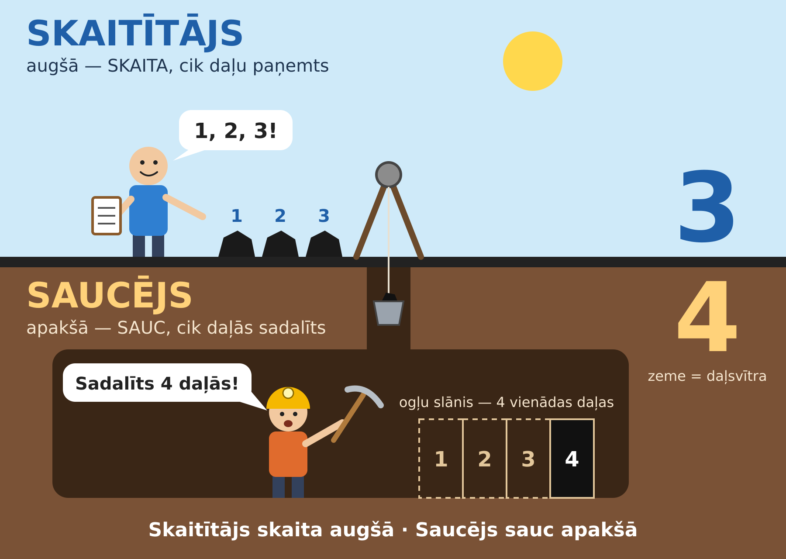

Daļskaitļi
1 / 10Daļskaitļi
Daļskaitlis parāda, cik daļas no veselas ņemtas
3/4 — 3 daļas no 4 vienādām daļām
Šajā tēmā
- 1Daļskaitļa uzbūve
- 2Veidi
- 3Paplašināšana un saīsināšana
- 4Salīdzināšana
- 5Darbības
- 6Biežākās kļūdas
- 7Daļskaitļi dzīvē
- 8Attēls
Daļskaitļa uzbūve
Skaitītājs stāv uz zemes un skaita, cik ogļu izcelts — 3
Saucējs ir raktuvē un sauc, cik daļās slānis sadalīts — 4
Zemes virsma = daļsvītra
Cik daļas ņemam
3/4
3/4 = 3 : 4 = 0,75
Cik vienādās daļās sadalīts veselais
3/4
Saucējs nekad nav 0!
Veidi
Skaitītājs < saucējs
3/4, 1/2, 5/8 — mazāka par 1
Skaitītājs ≥ saucējs
7/4, 5/5 — lielāka vai vienāda ar 1
Veselā daļa + daļa
1 3/4 = 7/4
(1 · 4 + 3 = 7)
Paplašināšana un saīsināšana
Skaitītāju un saucēju reizina ar to pašu skaitli
1/2 = 2/4 = 3/6
Skaitītāju un saucēju dala ar to pašu skaitli
6/8 = 3/4 (: 2)
Salīdzināšana
Lielāka tā, kurai lielāks skaitītājs
3/7 < 5/7
Vispirms kopsaucējs
2/3 un 3/4 → 8/12 un 9/12
2/3 < 3/4
Darbības
Vienādi saucēji: saskaita skaitītājus
2/7 + 3/7 = 5/7
Dažādi saucēji: vispirms kopsaucējs
1/2 + 1/3 = 3/6 + 2/6 = 5/6
Tāpat kā saskaitīšana — ar kopsaucēju
3/4 − 1/6 = 9/12 − 2/12 = 7/12
Skaitītāju ar skaitītāju, saucēju ar saucēju
2/3 · 3/5 = 6/15 = 2/5
Reizina ar apgriezto otro daļu
2/3 : 4/5 = 2/3 · 5/4 = 10/12 = 5/6
Biežākās kļūdas
❌ 1/2 + 1/3 = 2/5
✅ 1/2 + 1/3 = 5/6
Apgriež otro daļu (dalītāju), nevis pirmo
Vispirms pārvērt neīstajā daļā
1 1/2 · 2/3 = 3/2 · 2/3 = 1
❌ 1/2 = 2/2
✅ 1/2 = 2/4 — reizina abus
Daļskaitļi dzīvē
🍕 Pica 8 gabalos, apēsti 3 → 3/8 picas
⏰ Ceturtdauļa stundas = 1/4 h = 15 min
💶 Puse no 10 € = 1/2 · 10 = 5 €
Attēls
